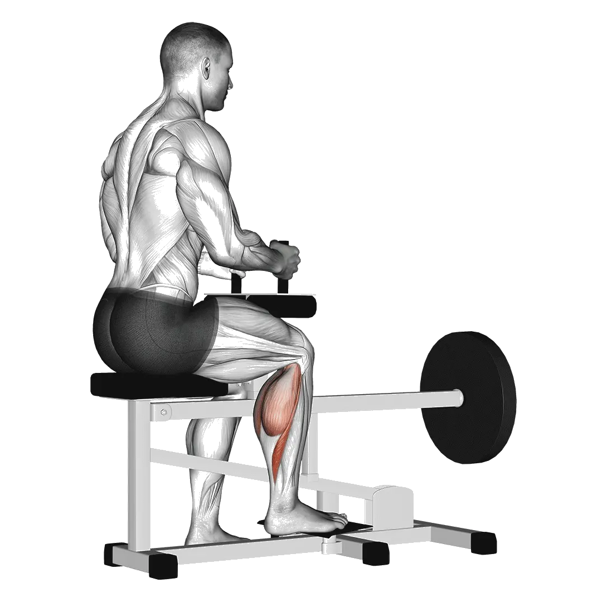

Einbeiniges sitzendes Wadenheben
Für Einbeiniges sitzendes Wadenheben kannst du Durchschnittsgewicht und Kraftstandards als Referenz für den Bereich Beine vergleichen. Die Zielmuskulatur ist Adduktoren, Wadenmuskulatur.

Durchschnittsgewicht: Mittelstufe
Richtwert für eine Person auf mittlerem Niveau.
Männer
62 kg
Frauen
38 kg
Einbeiniges sitzendes Wadenheben: Durchschnittsgewicht [1RM]
| Level | ||
|---|---|---|
| Einsteiger | 15 kg | 7 kg |
| Anfänger | 34 kg | 19 kg |
| Fortgeschrittene | 62 kg | 38 kg |
| Erfahrene | 99 kg | 63 kg |
| Elite | 142 kg | 93 kg |
Hinweis: Diese Standards sind 1RM-Schätzwerte auf Basis durchschnittlicher Kraftsportlerinnen und Kraftsportler. Körpergewicht, Alter und andere persönliche Faktoren können die Werte beeinflussen. Die detaillierten Daten stehen in der Tabelle unten.
Einbeiniges sitzendes Wadenheben: Kraftstandards(kg)
Männer nach Körpergewicht (kg) [1RM]
| Körpergewicht | Einsteiger | Anfänger | Fortgeschrittene | Erfahrene | Elite |
|---|---|---|---|---|---|
| 50 | 6 | 18 | 39 | 67 | 101 |
| 55 | 8 | 21 | 43 | 73 | 109 |
| 60 | 10 | 25 | 48 | 79 | 116 |
| 65 | 11 | 28 | 52 | 85 | 123 |
| 70 | 14 | 31 | 56 | 90 | 129 |
| 75 | 16 | 34 | 61 | 95 | 135 |
| 80 | 18 | 37 | 64 | 100 | 141 |
| 85 | 20 | 40 | 68 | 105 | 146 |
| 90 | 22 | 42 | 72 | 109 | 152 |
| 95 | 24 | 45 | 76 | 114 | 157 |
| 100 | 25 | 48 | 79 | 118 | 162 |
| 105 | 27 | 51 | 82 | 122 | 167 |
| 110 | 29 | 53 | 86 | 126 | 171 |
| 115 | 31 | 56 | 89 | 130 | 176 |
| 120 | 33 | 58 | 92 | 133 | 180 |
| 125 | 35 | 61 | 95 | 137 | 185 |
| 130 | 37 | 63 | 98 | 141 | 189 |
| 135 | 38 | 65 | 101 | 144 | 193 |
| 140 | 40 | 68 | 104 | 148 | 197 |
Männer nach Alter [1RM]
| Alter | Einsteiger | Anfänger | Fortgeschrittene | Erfahrene | Elite |
|---|---|---|---|---|---|
| 15 | 13 | 29 | 53 | 84 | 121 |
| 20 | 14 | 33 | 60 | 96 | 138 |
| 25 | 15 | 34 | 62 | 99 | 142 |
| 30 | 15 | 34 | 62 | 99 | 142 |
| 35 | 15 | 34 | 62 | 99 | 142 |
| 40 | 15 | 34 | 62 | 99 | 142 |
| 45 | 14 | 32 | 59 | 94 | 134 |
| 50 | 13 | 30 | 55 | 88 | 126 |
| 55 | 12 | 28 | 51 | 81 | 117 |
| 60 | 11 | 25 | 47 | 74 | 106 |
| 65 | 10 | 23 | 42 | 67 | 96 |
| 70 | 9 | 21 | 38 | 60 | 86 |
| 75 | 8 | 18 | 34 | 54 | 77 |
| 80 | 7 | 16 | 30 | 48 | 69 |
| 85 | 6 | 15 | 27 | 43 | 62 |
| 90 | 6 | 13 | 24 | 39 | 56 |
Frauen nach Körpergewicht (kg) [1RM]
| Körpergewicht | Einsteiger | Anfänger | Fortgeschrittene | Erfahrene | Elite |
|---|---|---|---|---|---|
| 40 | 2 | 10 | 23 | 42 | 65 |
| 45 | 3 | 12 | 26 | 46 | 71 |
| 50 | 5 | 14 | 29 | 51 | 76 |
| 55 | 6 | 16 | 33 | 55 | 81 |
| 60 | 7 | 18 | 36 | 58 | 86 |
| 65 | 8 | 20 | 38 | 62 | 90 |
| 70 | 10 | 22 | 41 | 66 | 94 |
| 75 | 11 | 24 | 44 | 69 | 98 |
| 80 | 12 | 26 | 46 | 72 | 102 |
| 85 | 14 | 28 | 49 | 75 | 106 |
| 90 | 15 | 30 | 51 | 78 | 109 |
| 95 | 16 | 32 | 53 | 81 | 112 |
| 100 | 17 | 33 | 56 | 83 | 115 |
| 105 | 18 | 35 | 58 | 86 | 119 |
| 110 | 20 | 37 | 60 | 89 | 122 |
| 115 | 21 | 38 | 62 | 91 | 124 |
| 120 | 22 | 40 | 64 | 93 | 127 |
Frauen nach Alter [1RM]
| Alter | Einsteiger | Anfänger | Fortgeschrittene | Erfahrene | Elite |
|---|---|---|---|---|---|
| 15 | 6 | 17 | 32 | 54 | 79 |
| 20 | 7 | 19 | 37 | 61 | 90 |
| 25 | 7 | 19 | 38 | 63 | 93 |
| 30 | 7 | 19 | 38 | 63 | 93 |
| 35 | 7 | 19 | 38 | 63 | 93 |
| 40 | 7 | 19 | 38 | 63 | 93 |
| 45 | 7 | 18 | 36 | 60 | 88 |
| 50 | 7 | 17 | 34 | 56 | 82 |
| 55 | 6 | 16 | 31 | 52 | 76 |
| 60 | 6 | 15 | 29 | 47 | 70 |
| 65 | 5 | 13 | 26 | 43 | 63 |
| 70 | 5 | 12 | 23 | 38 | 56 |
| 75 | 4 | 11 | 21 | 34 | 50 |
| 80 | 4 | 10 | 19 | 31 | 45 |
| 85 | 3 | 9 | 17 | 28 | 40 |
| 90 | 3 | 8 | 15 | 25 | 36 |
Hinweis: Eine Standard-Langhantel im Fitnessstudio wiegt meist 20 kg.
Tracking und Analyse in der Shiba App
Gewichte, Wiederholungen und Fortschritt an einem Ort.
Tabellenhinweise
| Level | Beschreibung | Verteilung |
|---|---|---|
| Einsteiger | Beherrscht die saubere Technik und trainiert seit mindestens 1 Monat regelmäßig. | Untere 5% |
| Anfänger | Trainiert seit mindestens 6 Monaten regelmäßig. | Top 80% |
| Fortgeschrittene | Trainiert seit mindestens 2 Jahren regelmäßig. | Top 50% |
| Erfahrene | Trainiert seit mehr als 5 Jahren regelmäßig. | Top 20% |
| Elite | Trainiert diese Übung seit mehr als 5 Jahren gezielt. | Top 5% |
Weitere Übungen
Beine
Seitlicher Ausfallschritt
Beine
Glute Kickback
Beine
Donkey Wadenheben
Beine
Kurzhantel-Wadenheben im Gehen
Beine / Kurzhantel
Seitliches Beinheben
Beine / Körpergewicht
Jefferson-Kniebeuge
Beine
Floor Hüftabduktion
Beine
Hüftstrecken
Beine
Floor Hüftstrecken
Beine
Kniebeuge
Beine / BIG3
Beinpresse am Schlitten
Beine
Frontkniebeuge
Beine